GridView의 컨텍스트 메뉴의 노출 예제입니다. 설정을 통해 [마우스 오른쪽 마우스 버튼 클릭]으로 컨텍스트 메뉴를 노출할 수 있으며 설정을 통해 기능이 동작되는 영역을 지정할 수 있습니다.
바디 영역에서 컨텍스트 메뉴 사용하기
바디 영역에서 컨텍스트 메뉴 사용하기 - 단축키 확장
헤더 영역에서 컨텍스트 메뉴 사용하기
바디 영역과 헤더 영역에서 컨텍스트 메뉴 사용하기
컨텍스트 메뉴 사용 안 함(기본 설정)
[브라우저(Chrome) 실행 예시 - GridView의 바디 영역]
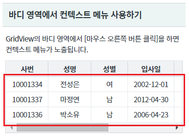
컨텍스트 메뉴가 노출됩니다.
[브라우저(Chrome) 실행 예시]
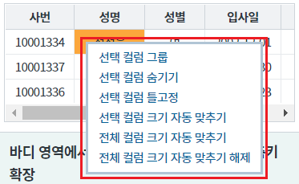
[브라우저(Chrome) 실행 예시 - GridView의 바디 영역]
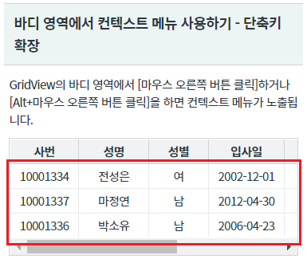
컨텍스트 메뉴가 노출됩니다.
[브라우저(Chrome) 실행 예시]
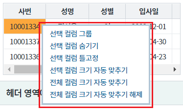
[브라우저(Chrome) 실행 예시 - GridView의 헤더 영역]
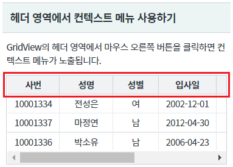
컨텍스트 메뉴가 노출됩니다.
[브라우저(Chrome) 실행 예시]
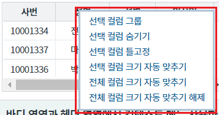
[브라우저(Chrome) 실행 예시 - GridView의 헤더, 바디 영역]
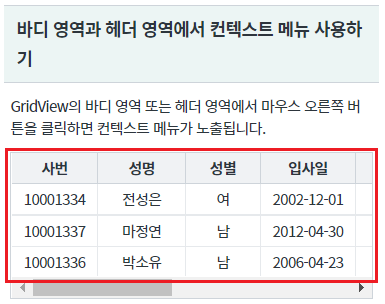
컨텍스트 메뉴가 노출됩니다.
[브라우저(Chrome) 실행 예시]
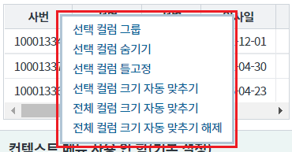
GridView의 속성을 정의합니다.
[필수] contextMenu="true" //[default: false, true] context menu 사용 여부.
그림 1.웹스퀘어5 SP5 스튜디오의 Property View(속성창) 예시
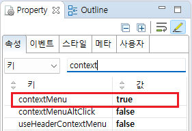
[소스 코드 예시]
<!-- gridView 의 소스 본문 예시 --> <w2:gridView contextMenu="true" dataList="data:dlt_member"> <!-- 중략 --> </w2:gridView>
GridView의 속성을 정의합니다.
[필수] contextMenu="true" //[default: false, true] context menu 사용 여부.
[필수] contextMenuAltClick="true" //[default: false, true] Alt 키 + 마우스 좌클릭 시, 컨텍스트 메뉴를 표시.
그림 2.웹스퀘어5 SP5 스튜디오의 Property View(속성창) 예시
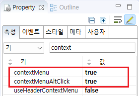
[소스 코드 예시]
<!-- gridView 의 소스 본문 예시 --> <w2:gridView contextMenu="true" contextMenuAltClick="true" dataList="data:dlt_member"> <!-- 중략 --> </w2:gridView>
GridView의 속성을 정의합니다.
[필수] useHeaderContextMenu="true" //[default: false, true] header context menu 사용 여부.
그림 3.웹스퀘어5 SP5 스튜디오의 Property View(속성창) 예시
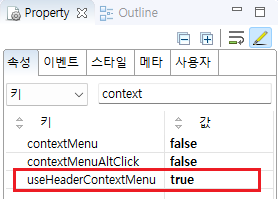
[소스 코드 예시]
<!-- gridView 의 소스 본문 예시 --> <w2:gridView useHeaderContextMenu="true" dataList="data:dlt_member"> <!-- 중략 --> </w2:gridView>
GridView의 속성을 정의합니다.
[필수] contextMenu="true" //[default: false, true] context menu 사용 여부.
[필수] useHeaderContextMenu="true" //[default: false, true] header context menu 사용 여부.
그림 4.웹스퀘어5 SP5 스튜디오의 Property View(속성창) 예시
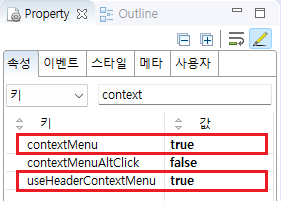
[소스 코드 예시]
<!-- gridView 의 소스 본문 예시 --> <w2:gridView contextMenu="true" useHeaderContextMenu="true" dataList="data:dlt_member"> <!-- 중략 --> </w2:gridView>
contextMenu
useHeaderContextMenu
contextMenuAltClick
[웹스퀘어5 SP5 개발 가이드] GridView
링크 : https://docs1.inswave.com/sp5_user_guide/bc10c1b82c9a2a0b#e1c4658baf7e726f
[웹스퀘어5 SP5 개발 가이드] GridView 컨텍스트 메뉴
링크 : https://docs1.inswave.com/sp5_user_guide/86bdcf48029b958b#a8ed946e7ef1cc79
GridView 컨텍스트 메뉴 표시 (바디)
링크 : https://youtu.be/AF3KgtSROwc
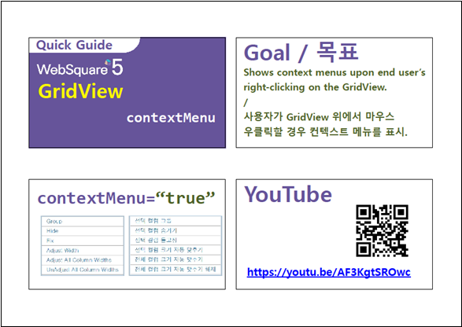
GridView 컨텍스트 메뉴 표시 (헤더)
링크 : https://youtu.be/Ggkkn42zZMU
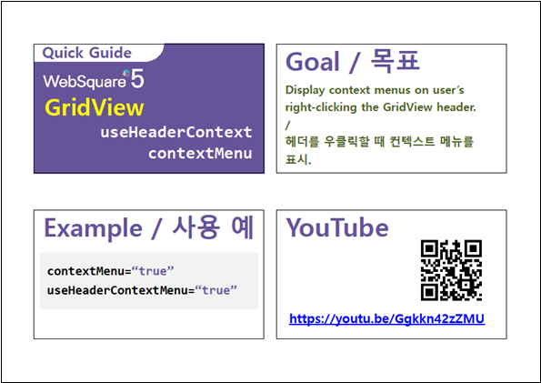
GridView Alt 키 + 마우스 좌클릭을 통한 컨텍스트 메뉴 표시
링크 : https://youtu.be/iqsNUcLaBIU
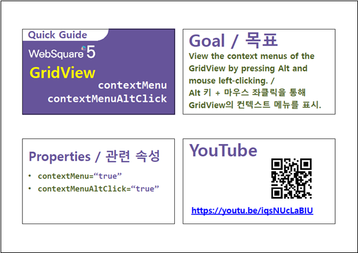